The diagram starts with the hardware-feasibility check that corrected a wrong assumption from the research (“QLoRA is CUDA-only”), then follows the actual training loop and the honest before/after evaluation.

| Node | Location | What it does |
|---|---|---|
| QUANTCHECK | train_qlora.py:count_quantized_linear_layers() | Directly inspects the loaded model's modules for type(m).__name__ == 'Linear4bit' — this is what PROVED real 4-bit quantization was happening on this Apple Silicon CPU, rather than assuming the commonly-cited "CUDA-only" claim still held without testing it. |
| PCTCHECK | train_qlora.py:trainable_param_stats() | Measured directly: 147,456 trainable parameters out of 60,826,368 total — 0.242%. This is the number QLoRA exists to shrink, verified by actually counting p.requires_grad parameters, not assumed from the config. |
| BACKWARD | train_qlora.py:train() | Because prepare_model_for_kbit_training() froze the quantized base and get_peft_model() only unfroze the LoRA adapter matrices, loss.backward() only ever computes gradients for that 0.242% — a negative test directly verifies NO parameter outside the LoRA adapter has requires_grad=True. |
| COMPARE_OUT | evaluate.py:compare() | Loads a SECOND, completely fresh copy of the base model (no adapter) specifically so the before/after comparison is fair — not comparing the fine-tuned model against its own earlier checkpoint. |
The research claimed 4-bit quantization needs CUDA. Tested directly instead of assumed: bitsandbytes 0.50.1 produced genuine Linear4bit layers on this CPU — the project ended up doing REAL QLoRA, not a fallback.
LOADQUANT → VERIFYQUANT(count=24) → QUANTCHECK(>0 → Yes) → PROCEEDLoss drops monotonically from 5.18 to 4.06 across all 8 epochs — proof the tiny 0.242% of trainable parameters are genuinely receiving useful gradient signal.
TRAINLOOP×8 → [BATCHLOOP → FORWARD → BACKWARD(only LoRA params)] → SAVEADAPTER(591KB)Neither the base model nor the fine-tuned model produces fluent output at this scale (82M params, 24 examples) — but the fine-tuned model's phrasing measurably shifts toward the training pattern, which is the real, correctly-scoped claim.
GENBASE('generic repetition') vs. GENFT('topically on-target phrasing') → COMPARE_OUT(honest, not cherry-picked)